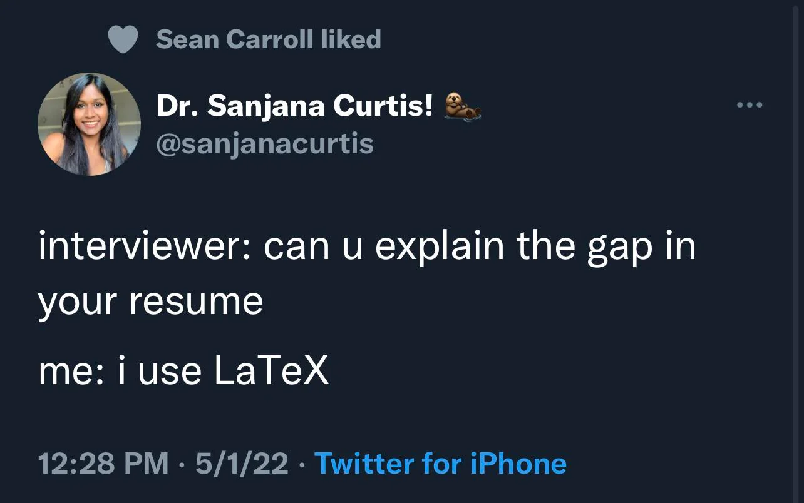
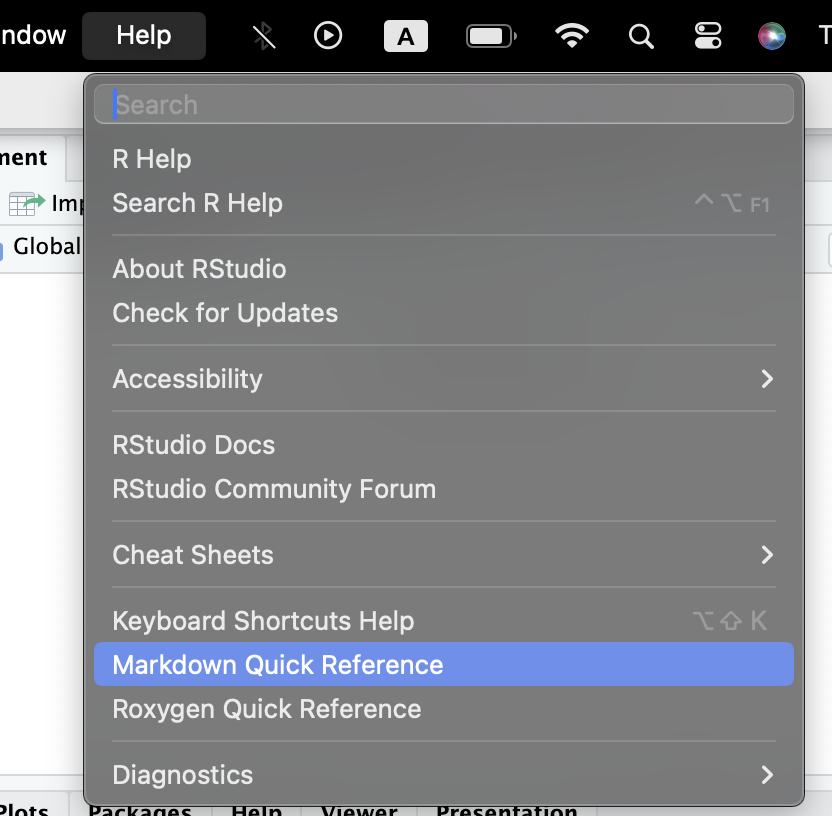
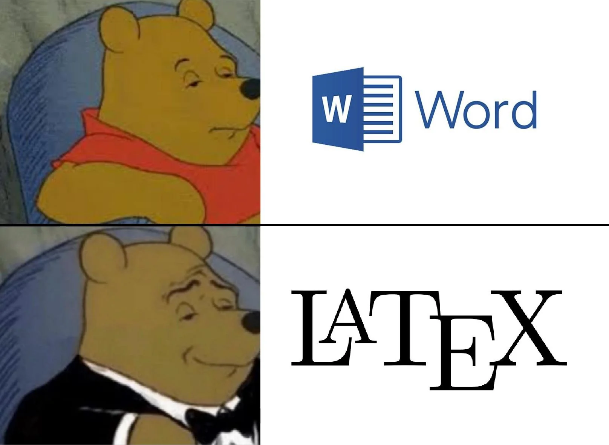

Session 1 - \(\LaTeX\) and Quarto

Today’s Lab
Good Coding
\(\LaTeX\)
Quarto
YAML- Code Chunks
- Markdown text
- R Projects
herepackage
- Folder Structure
Good Coding
Good programming or coding is closely related to the idea of Literate Statistical Programming. As Donald Knuth (1984) defines, it is a way to write programs that focuses on explaining to human readers what we want the computers to do, rather than just instructing the computers to do so.
Statistical Programming , hence, is about formalizing your thinking about how you treat the data and using functional programming to automate such formalized tasks to be done repetitively. It improves efficiency, enhances reproducibility, and boosts creativity when it comes to finding new patterns in your data.
Guidelines for data and statistical analyses:1
- Accuracy: Write a code that reduces the chances of making an error and lets you catch one if it occurs.
- Efficiency: If you are doing it twice, see the pattern of your decision-making and formalize it in your code. Difference between Excel and coding
- Replicate-and-Reproduce: Ability to repeat the computational process which reflects your thinking and decisions that you took along the way. Improves transparency and forces one to be deliberate and responsible about choices during analyses.
- Human Interpretability: Writing code is not just about analyzing but allowing yourself and then others to be able to understand your analytic choices.
- Public Good: Research is a public good. And the code allows your research to be truly accessible. This means you write a code that anyone else who understands the language can read, reuse, and recreate without you being present. We essentially ensure that by writing a readable and ideally publicly accessible code.
Further, writing good code could also benefit from some common guidelines used across coders. A good starting point is the tidyverse style guide.
\(\LaTeX\)
\(\LaTeX\) (pronounced “LAY-tek†or “LAH-Tek) is a typesetting tool for preparing high-quality professional documents. It is the preferred typesetting tool used in high-end scientific documentation task.It is not a word-processing tool. It is a simple tool without too many priors about how the document should look like.
\(\LaTeX\) gives us superior control over how your document look like, has enhanced capabilities to write technical specifications (Maths, stats, proofs, etc.), include code, and produces readily editable back-end documents.
There are many interfaces that allow you to work with \(\LaTeX\). Overleaf is a widely used online platform and Texmaker is a popular offline application.
However, RStudio has in-built capability to double as a \(\LaTeX\) editor. Previously RMarkdown and now Quarto have capabilities that you can harness to achieve professional and beautifully typeset documents.
Think of writing an equation like:
\[
Violence_{i,j} = \beta_0 + \beta_1EthnicFractionalization_i + \gamma_j + \epsilon_i
\] In Latex, using quarto, you have to write something like the following:
$Violence_{i,j} = \\beta_0 + \\beta_1EthnicFractionalization_i + \\gamma_j + \\epsilon_i$
For a single line of text we encapsulate code by $ sign.
For multi-line code we use $$.
Read more about \(\LaTeX\) here
The box folder has some detailed resources for helping with typesetting in \(\LaTeX\).
This can also happen, btw!

Quarto
Quarto is a literate statistical programming tool.
Quarto can include code from not just R, but also Python, Julia, Stata and many other languages/tools.
Quarto allows you to include the good coding guidelines that we discussed above. It provides you with capability to write code and perform data analysis using R, write text that is part of any professional communication, and include mathematical symbols and equations in a well typeset format. Essentially, it allows you to work on a manuscript with data analysis at one place.
Here is some cool stuff that you can do with quarto.
A Quarto document is saved as a .qmd file. You can edit this file in two ways: Programmatically by being in source button and visually by choosing the Visual button, both button on top left corner of the .qmd window. More details about workign with Quarto can be found on the quarto website here.
There are three building blocks in a .qmd file:

YAML
Short for Yet-Another-Markup-Languge
This is the part we see sandwiched between two --- at the strat of .qmd file. Here we define different global settings for the particular document.
Currently, we see
---
title: "Untitled"
format: html
---We can add many more options here to modify the details to appear at the start of the document. Here’s an example from quarto reference site
Or, global settings for different formats of outputs like html or pdf, as follows
Code Chunks
You can start a new R code chunk by pressing cmd + option + I or ctrl + alt + I.
You can also do this with the Insert button icon in the editor toolbar or by manually typing the chunk delimiters ```{r} and ```.
Try to use the keyboard shortcut more often as it will save you a ton of time later.
R code chunks are surrounded by ```{r} and ```.
You can run each code chunk by clicking the Run icon (it looks like a play button at the top of the chunk), or by pressing Cmd/Ctrl + Shift + Enter.
#| eval: true # Do evaluate this chunk
#| echo: true # Do show this chunk in the final rendered document
#| output: true # Do show the output / results of this chunk in the rendered document
print("Dont run this code")RStudio executes the code and displays the results below the code.
If you don’t like seeing your plots and output in your document and would rather make use of RStudio’s Console and Plot panes, you can click on the gear icon next to “Render†and switch to “Chunk Output in Console”.
A chunk should be relatively self-contained, and focused around a single task.
Code chunk options are included in a special comment at the top of the block (lines at the top prefaced with #| are considered options). More on code chunk options here
Options available for customizing output include:
| Option | Description |
|---|---|
eval |
Evaluate the code chunk (if false, just echos the code into the output). |
echo |
Include the source code in output |
output |
Include the results of executing the code in the output (true, false, or asis to indicate that the output is raw markdown and should not have any of Quarto’s standard enclosing markdown). |
warning |
Include warnings in the output. |
error |
Include errors in the output (note that this implies that errors executing code will not halt processing of the document). |
include |
Catch all for preventing any output (code or results) from being included (e.g. include: false suppresses all output from the code block). |
You can also add these options as global options in the YAML by writing them under execute option like:
---
execute:
echo: true
inlcude: false
---The following table summarizes which types of output each option suppresses:2
| Option | Run code | Show code | Output | Plots | Messages | Warnings |
|---|---|---|---|---|---|---|
eval: false |
X | X | X | X | X | |
include: false |
X | X | X | X | X | |
echo: false |
X | |||||
results: hide |
X | |||||
fig-show: hide |
X | |||||
message: false |
X | |||||
warning: false |
X |
Inline code
We can also embed R code into a Quarto document: directly into the text, with: ```{r} <code> ```.
For example: ```{r} (2+2)```.
Markdown Text
Markdown text is like any other text just with some special considerations.
You can see the help section from R to see some of the basic formatting tips.

Below is a yaml that you can use in your assignments and documents with modifications.
---
title: My First Latex Document
subtitle: Govt 8003
author: <Your Name>
date: today
format:
pdf:
highlight-style: kate
citation_package: natbib
docx: default
always_allow_html: true
geometry: margin=1.2in
fontsize: 12pt
linestretch: 1.5
linkcolor: blue
toc: true
link-citations: true
editor_options:
chunk_output_type: console
execute:
fig-height: 6
fig-width: 8.5
fig-pos: "!t"
keep_tex: true
whitespace: small
---“If you think your thought is not making sense, write it in** \(\LaTeX\).
It will at now not make sense in a beautiful way
-Buddha (500 B.C.E.)
R Projects
We often use the setwd() command to trace the files we need in our work. As work expands, projects will have multiple datasets to be loaded, different subsidiary scripts to be used, and multiple outputs to be saved.
A first order problem related to both file management and reproducability of code is the usage of file paths. Using absolute paths, like ~/User/MyName/Documents/..... becomes cumbersome and also inhibits efficiency of reproducability. Every time someone else runs the script, they will have to change the file paths in all the instances in Rscripts or .qmd file to locate the related datasets as well as other objects. Similarly, there would be issues with saving objects in new places. A partially efficient way we use involves using setwd() to direct R to a new working directory; this is also called usage of relative paths
R Projects is a built-in mechanism in RStudio for seamless file management and usage of relative paths.
Let’s start by creating a new project. Click File > New Project. Name the new project govt-8003.
here package
An efficient file and folder management system is going to be crucial as we move into working with serious projects. As stressed earlier, keeping and using all the files associated with a project in a comprehensible folder system is facilitated by R Projects. You would ideally want to create your own template for folder management that you follow across projects. For starters, the folder structure below is the one created for your data essay assignment in Govt 8001 or Quant 1.
You can use the point-and-click functionality in your computers to create this structure. Later today, we will briefly go through an R script that do this programmatically.
📦 govt-8003
├─ govt-8003.RProj
├─ 000-setup.R
├─ 001-eda.qmd
├─ 002-analysis.qmd
└─ 003-manuscript.qmd
├─ Data
│ ├─ Raw
│ │ ├─ Dataset1
│ │ │ ├─ dataset1.csv
│ │ │ └─ codebook-dataset1.pdf
│ │ └─ Dataset2
│ │ ├─ ...dta
│ │ └─ codebook-dataset2.pdf
│ └─ Clean
│ └─ Merged-df1-df2.csv
├─ Scripts
│ ├─ R-scripts
│ │ ├─ plotting-some-variable.R
│ │ └─ exploring-different-models.R
│ ├─ Stata-Scripts
│ │ └─ seeing-variable-labels.do
│ └─ Python-Scripts
│ └─ scraping-data-from-website.py
└─ Outputs
├─ Plots
│ ├─ ...jpeg
│ └─ ...png
├─ Tables
│ └─ .csv
└─ Text
└─ ...txtSuggested folder structure for a new academic project
While we learnt how to create or associate an .RProj with a folder, integrating it with here() function from the here package, makes things further smoother. Let’s do it with the following exercise.
Make it a habit of using R Projects and here() function in your scripts for writing portable code.
You can read this quick and informative blogpost on using these two here.
Folder Structure
We ideally want a folder structure that is easily understandable to us and others.
📦 govt-8003
├─ govt-8003.RProj
├─ 000-setup.R
├─ 001-eda.qmd
├─ 002-analysis.qmd
└─ 003-manuscript.qmd
├─ Data
│ ├─ Raw
│ │ ├─ Dataset1
│ │ │ ├─ dataset1.csv
│ │ │ └─ codebook-dataset1.pdf
│ │ └─ Dataset2
│ │ ├─ ...dta
│ │ └─ codebook-dataset2.pdf
│ └─ Clean
│ └─ Merged-df1-df2.csv
├─ Scripts
│ ├─ R-scripts
│ │ ├─ plotting-some-variable.R
│ │ └─ exploring-different-models.R
│ ├─ Stata-Scripts
│ │ └─ seeing-variable-labels.do
│ └─ Python-Scripts
│ └─ scraping-data-from-website.py
└─ Outputs
├─ Plots
│ ├─ ...jpeg
│ └─ ...png
├─ Tables
│ └─ .csv
└─ Text
└─ ...txtWe can create this structure by using point and click system on our laptops. But since we might want to use the same folder structure repetitively it will make sense to be lazy and do it programmatically.
Plan Concept of a Plan
Here’s a quick workflow for starting a new project or assignment or paper.
Create a new Rstudio Project by clicking
File > New Project. Name itgovt-<coursecode>-<project.Check if now your RStudio Window shows the project name on top right corner. If not, go to folder and double-click the
.RProjfile.Paste the
000-setup.Rfile in the main project folder. Open it in the same Rstudio window with the project and run the complete file. Your folder structure is created.Copy your raw data in
Data/Rawfolder. Similarly, your scripts inScripts/RScriptsfolderStart your new
.qmdfile and save it in the main folder.Remember to use
here()package extensively in both, scripts and quarto file, when loading or saving the data.You can always zip the whole project folder for sharing. The receiver will just need to unzip and run the code after starting the associated
.RProjfile, without changing file paths on their computer.

Additonal Links
Zotero integration with RStudio: Follow the link here.
Github: This is an excellent tutorial
Inspired by the summary provided by Prof Aaron Williams’ course on Data Analysis offered at McCourt School. Strongly recommended to learn good coding using R↩︎